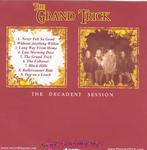

| Artist: | The Grand Trick |
| Title: | The Decadent Session |
| Label: | Transubstans records |
| Length(s): | 50 minutes |
| Year(s) of release: | 2005 |
| Month of review: | [01/2006] |
| 1) | Never Felt So Good | 5.57 |
| 2) | Without Anything Within | 3.46 |
| 3) | Long Way From Home | 5.42 |
| 4) | Late Morning Daze | 7.09 |
| 5) | The Grand Trick | 5.55 |
| 6) | The Follower | 4.34 |
| 7) | Black Hills | 4.54 |
| 8) | Rollercoaster Ride | 4.49 |
| 9) | Dog On A Leash | 7.35 |
Long Way From Home's lick reminds me of Foreigner's Double Vision and includes a break that is a bit more out of the mainstream than one would expect. Even though not every track has such clear references, there is a general tendency of unoriginality. The style develops some bluesy accents (as did DP) as the album progresses. Oh, and just to prevent from not mentioning them: Led Zeppelin.
Dahnberg's voice unfortunately misses the force rock singers tend to have, thus tending towards what is just a little too much of a whine on some tracks. This does turn into something of a problem as the album progresses. Apart from that the band do quite well in creating the sound that would fit what they themselves call "seventies inspired heavy rock", including a somewhat lo-fi sound in both production and recording that is just not quite' sexy.